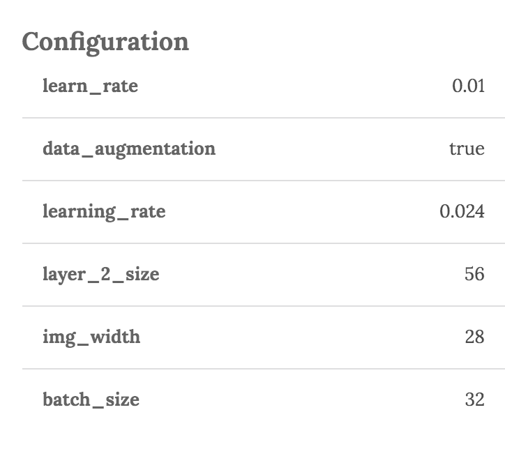

Introduction
# Install wandb
pip install wandb
WandB is a tool that makes building machine learning models more efficient and more fun.
WandB helps with:
- Tracking, saving and reproducing models.
- Visualizing results across models.
- Automating large-scale hyperparameter search.
Getting Started
WandB is easy to install. Once you have download the python library, you just need to add a few lines of code to your training script.
Syncing Runs to the Cloud
# Initialize wandb in the root directory of your project
wandb init
# This runs your script and syncs all metrics and metadata to the cloud
wandb run learn.py
Running WandB with the wandb.ai cloud service:
- Sign up for an account by going to our sign up page.
Run
wandb initfrom the command line. You will be prompted for a team name and a project name. This will create a wandb directory that contains a settings file with the information you provided. You can optionally check the wandb/settings file into version control. All other files and folders in the wandb directory are automatically ignored.Run your training script as
wandb run learn.py. Now, a new record will be added to https://app.wandb.ai/$ENTITY_NAME/$PROJECT_NAME. Your training logs will be saved along with a snapshot of your latest commit.
Automated Environments
# This is secret and shouldn't be checked into version control
WANDB_API_KEY=$YOUR_API_KEY
# Description is optional
WANDB_DESCRIPTION="$SHORT_MESSAGE"
# Only needed if you don't checkin the wandb/settings file
WANDB_ENTITY=$username
WANDB_PROJECT=$project
# Only needed if you don't checkin the wandb/settings file
os.makedirs('wandb', exist_ok=True)
# If you don't want to call your script with the wandb run wrapper
os.environ['WANDB_MODE'] = 'run'
When you are running your script in an automated environment, you can control wandb with environment variables set before the script runs or within the script.
Relevant environment variables:
| Variable name | Usage |
|---|---|
| WANDB_API_KEY | Sets the authentication key associated with your account. You can find your key at https://app.wandb.ai/profile. This must be set if wandb login hasn't been run on the remote machine. |
| WANDB_DESCRIPTION | Description associated with a run. This will become the name of your run in the UI. If not set it will be randomly generated for you |
| WANDB_ENTITY | The entity associated with your run. If you have run wandb init in the directory of your training script, it will create a directory named wandb and will save a default entity which can be checked into source control. If you don't want to create that file or want to override the file you can use the environmental variable. |
| WANDB_PROJECT | The project associated with your run. This can also be set with wandb init, but the environmental variable will override the value. |
| WANDB_MODE | Set this to run if you want to save your run to the cloud. Another way to do this is to run your script train.py with the command wandb run train.py. |
Tracking Models
Configurations

run = wandb.init()
run.config.epochs = 4 # config variables are saved to the cloud
flags = tf.app.flags
flags.DEFINE_string('data_dir', '/tmp/data')
flags.DEFINE_integer('batch_size', 128, 'Batch size.')
run.config.update(flags.FLAGS) # adds all of the tensorflow flags as config variables
run = wandb.init()
run.config.epochs = 4 # config variables are saved to the cloud
parser = argparse.ArgumentParser()
parser.add_argument('--batch-size', type=int, default=8, metavar='N',
help='input batch size for training (default: 8)')
run.config.update(args) # adds all of the arguments as config variables
run = wandb.init()
run.config.epochs = 4 # config variables are saved to the cloud
parser = argparse.ArgumentParser()
parser.add_argument('--batch-size', type=int, default=8, metavar='N',
help='input batch size for training (default: 8)')
run.config.update(args) # adds all of the arguments as config variables
Configurations is a way of automatically tracking the hyperparameters you used to build your model.
You can set the configuration values directly and access them as ordinary variables, or you can import variables from tensorflow flags or argparse objects to integrate with pre-existing code.
File-Based Configs
(Optional) Create a config-defaults file to automatically load hyperparameters into the config variable.
# sample config-defaults file
epochs:
desc: Number of epochs to train over
value: 100
batch_size:
desc: Size of each mini-batch
value: 32
You can create a file called config-defaults.yaml and it will automatically be loaded into the config variable.
You can tell wandb to load different config files with the argument --configs special-configs.yaml which will load parameters from the file special-configs.yaml.
Automatically load the yaml file into the config object
wandb run train.py
Change the config file used to load the config object
wandb run --configs special-configs.yaml
Mutiple config files are allowed
wandb run --configs special-configs.yaml,extra-configs.yaml
History
run = wandb.init(config=flags.FLAGS)
# Start training
with tf.Session() as sess:
sess.run(init)
for step in range(1, run.config.num_steps+1):
batch_x, batch_y = mnist.train.next_batch(run.config.batch_size)
# Run optimization op (backprop)
sess.run(train_op, feed_dict={X: batch_x, Y: batch_y})
# Calculate batch loss and accuracy
loss, acc = sess.run([loss_op, accuracy], feed_dict={X: batch_x, Y: batch_y})
run.history.add({'acc': acc, 'loss':loss}) # log accuracy and loss
run = wandb.init(config=args)
def keras_log(epoch, logs):
run.history.add({'loss': logs['loss'], 'acc': logs['acc']})
run.summary['acc'] = logs['acc']
model.fit(train, labels, callbacks=[LambdaCallback(keras_log)])
run = wandb.init(config=args)
for epoch in range(1, args.epochs + 1):
train_loss = train(epoch)
test_loss, test_accuracy = test()
torch.save(model.state_dict(), 'model')
run.history.add({"loss": train_loss, "val_loss": test_loss})
The history object is used to track metrics that change as the model trains. You can access
a mutable dictionary of metrics via run.history.row. The row will be saved and a new row created when
run.history.add is called. For simplicity, you can call run.history.add and pass in a dictionary of all the metrics you would like to save.
Context Manager
We provide a context manager that automatically calls add
and accepts an optional boolean to help keep nested code clean.
Context manager
with run.history.step(batch_idx % log_interval == 0):
run.history.row.update({"metric": 1})
if run.history.compute:
# Something expensive here
Media
run.history.row["examples"] = [wandb.Image(numpy_array_or_pil, caption="Label")]
run.history.add()
The history object also accepts rich media. Currently only images are supported. Media is added by supplying a list of wandb media objects.
If a numpy array is supplied we assume it's gray scale if the last dimension is 1, RGB if it's 3,
and RGBA if it's 4. If the array contains floats we convert them to ints between 0 and 255.
You can specify a mode
manually or just supply a PIL.Image. We recommend you don't add more than 20-50 images per step.
Summary
run = wandb.init(config=args)
for epoch in range(1, args.epochs + 1):
test_loss, test_accuracy = test()
run.summary["accuracy"] = test_accuracy
The summary statistics are used to track single metrics per model. If a summary metric is modified, only the updated state is saved. We automatically set summary to the last history row added unless you modify it manually.
Keras Callback
Simpler way to track metrics in keras using wandb.callbacks.Keras
import wandb
run = wandb.init()
model.fit(X_train, y_train, validation_data=(X_test, y_test),
callbacks=[wandb.callbacks.Keras()])
If you are using keras, you can use the Keras callback to automatically save
all the metrics and the loss values tracked in model.fit.
Saving Models
import wandb
run = wandb.init()
model.fit(X_train, y_train, validation_data=(X_test, y_test),
callbacks=[wandb.callbacks.Keras()])
model.save(os.path.join(run.dir, "model.h5")) #
Wandb will save to the cloud any files put in wandb's run directory.
Wandb's run directories are inside the wandb directory and the path looks like run-20171023_105053-3o4933r0 where 20171023_105053 is the timestamp and 3o4933r0 is the ID of the run.
Restoring Code State
# creates a branch and restores the code to the state it was in when run $RUN_ID was executed
wandb restore $RUN_ID
When wandb.init is called from your script, a link is saved to the last git commit if the code
is in a git repository. A diff patch is also created in case there are uncommitted changes or changes
that are out of sync with your remote.
Hyperparameter Search
Running a Parameter Sweep
To run a parameter sweep:
- Initialize your project to use wandb in the cloud.
- Create a sweep.yaml file specified below, which specified your training script, your parameter ranges and the search strategy.
- Initialize your sweep, which gives you a SWEEP_ID and a url to track all of your runs.
- Run wandb agent, which will get a set of parameter names and arguments from the wandb server and then run your training script with the parameters as arguments. You can run as many agents as you like.
Start a search from your projects root directory
wandb init # If you haven't already initialized your project
wandb sweep sweep.yaml # returns SWEEP_ID.
Start an agent
wandb agent SWEEP_ID
Sweep.yaml File
Example sweep.yaml
description: random sweep for my little cnn
# Training script to run
program: cnn.py
# Method can be bayes, random, grid
method: bayes
# Metric to optimize
metric:
name: val_loss
goal: minimize
# Should we early terminate runs
early_terminate:
type: envelope
# Parameters to search over
parameters:
learning-rate:
min: 0.001
max: 0.1
optimizer:
values: ["adam", "sgd"]
dropout:
min: 0.01
max: 0.5
epochs:
value: 30
Method
| Values | Meaning |
|---|---|
| grid | Grid Search - Will iterate over all possible sets of values in parameters. |
| random | Random Search - Will choose random sets of values |
| bayes | Bayesian Optimization - Uses a gaussian process to model the function and then chooses parameters to optimize probability of improvement |
Early Terminate
Early termination is a strategy to speed up hyperparameter search by killing off runs that appear to have lower performance than successful training runs.
| Values | Meaning |
|---|---|
| envelope | Use an envelope method for early termination/ |
| Not Specified | Don't do early termination. |
Parameters
The parameters dictionary specifies the ranges of configuration parameters.
| Values | Meaning |
|---|---|
| distribution: | A distribution from the distrbution table below. If not specified, the sweep will set to uniform is max and min are set, categorical if values are set and constant if value is set. |
| min: (float) max: (float) | Continuous values between min and max |
| min: (int) max: (int) | Integers between min and max |
| values: [a, b, c] | Discrete values |
| value: | A constant |
| mu: | Mean for normal or lognormal distributions |
| sigma: | Std Dev for normal or lognormal distributions |
| q: | Quantization parameter for quantized distributions |
Distributions
Supported distributions
| Name | Meaning |
|---|---|
| constant | Constant distribution. Must specify value. |
| categorical | Categorical distribution. Must specify values. |
| int_uniform | Uniform integer. Must specify max and min as integers. |
| uniform | Uniform continuous. Must specify max and min as floats. |
| q_uniform | Quantized uniform. Returns round(X / q) * q where X is uniform. Q defaults to 1. |
| log_uniform | Log uniform. Number between exp(min) and exp(max) so that the logarithm of the return value is uniformly distributed. |
| q_log_uniform | Quantized log uniform. Returns round(X / q) * q where X is log_uniform. Q defaults to 1. |
| normal | Normal distribution. Value is chosen from normal distribution. Can set mean mu (default 0) and std dev sigma (default 1). |
| q_normal | Quantized normal distribution. Returns round(X / q) * q where X is normal. Q defaults to 1. |
| log_normal | Log normal distribution. Value is chosen from log normal distribution. Can set mean mu (default 0) and std dev sigma (default 1). |
| q_log_normal | Quantized log normal distribution. Returns round(X / q) * q where X is log_normal. Q defaults to 1. |